解读 by Xinkai Wang（王薪恺） · 上海创智学院 · 2026
原论文：EgoWAM: World Action Models Beyond Pixels with In-the-Wild Egocentric Human Data · 项目主页
00 · 先抓住结论
- 问题：把人类第一视角示范重定向成机器人动作再做行为克隆，仍会混入人的身体结构、头部晃动、速度和抓握习惯；数据越多不一定越好，甚至会把机器人带偏。
- 关键改动：在共享 Transformer 上并列放置动作头和世界模型头。动作头学习“机器人该怎么动”，世界模型头学习“场景接下来怎么变”，两者共同塑造共享表征。
- 核心发现：世界预测的目标比“有没有世界模型”更重要。像素重建迁移较弱；DINO 特征最擅长陌生物体和场景；去除相机自运动的 3D Flow 最擅长精确空间操作。
- 部署方式：世界模型头只在训练时充当教师，部署时完全丢弃。最终策略只保留共享 trunk 和动作头，以 30 Hz 运行，成本与同规模 BC 策略相同。
- 证据：三项双臂真实任务、1800 次 rollout、对齐与故意错位的人类数据消融，以及 RoboTwin 四种机器人之间的迁移复验。
01 · 问题从哪里来：人类数据很多，但动作不是通用语言
机器人数据昂贵，而人类每天都在产生海量第一视角操作视频。难点从来不是“有没有数据”，而是这些视频里哪些东西值得迁移给机器人。
一段人类把杯子放到碟子上的视频同时包含两类信息。第一类是可迁移的：杯子在哪里、任务先后关系是什么、什么接触会让杯子移动、最终状态应当是什么。第二类则与人的身体绑定：手腕能如何旋转、手指如何包裹杯壁、头随身体怎样晃动、完成动作的节奏有多快。行为克隆把两类信息都塞进同一个动作目标，于是内容和执行方式被迫纠缠。
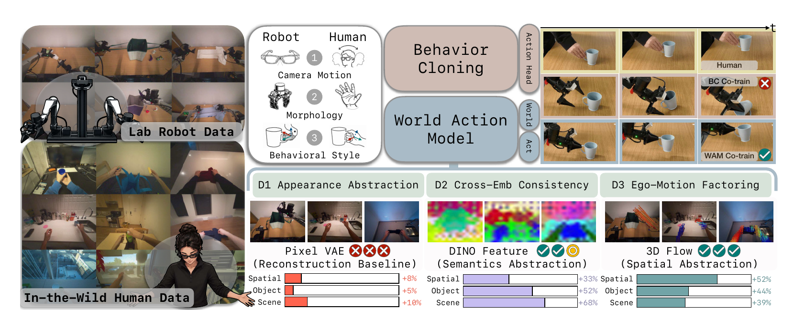
先用人类视频学习视觉特征，再把特征迁移给机器人策略。优点是规避动作鸿沟，缺点是人类视频没有直接进入下游策略的端到端训练。
把人手轨迹重定向到机器人末端执行器空间，人与机器人共用动作解码器。它利用数据最直接，也最依赖视角、速度、运动学和抓握风格的一致性。
从视频提取 2D 点轨迹或 3D 运动场，再在测试时把预测运动解码成动作。跨具身更自然，但部署时多出一套运动预测与动作反演链路。
场景运动只负责训练共享 trunk，部署时不参与控制。它把“世界如何变化”变成辅助监督，同时保留端到端动作策略的运行成本。
02 · 先把动作通道做到足够强：14D 对齐不是草率基线
作者没有故意设置一个脆弱的 BC 对手。相反，他们先尽可能消除人机动作的表面差异，再观察剩余的负迁移。机器人和人类最终都被表示为双臂 14 维动作：每只手或机械臂包含 6-DoF 的 SE(3) 末端位姿，加 1 维夹爪开合。
把头动从人手轨迹里剥离
人手位姿原本在不断移动的 Aria 设备坐标系里。作者把未来手位姿重新表达在当前时刻 t 的相机坐标系中，让同一段物理移动不会因为佩戴者转头而得到完全不同的数值。
比较任务进度，而非相同秒数
人通常比遥操作机器人更快。人类窗口取 1.0 秒，机器人窗口取 1.5 秒，随后都重采样成 100 个动作点，尽量让两个窗口覆盖相近的语义进度。
分位数归一化抑制跟踪异常
每个动作维度的第 1 与第 99 百分位映射到 [−1, 1]，避免少量手部跟踪离群点决定整个动作空间的尺度。
仍然无法靠坐标变换解决的差异
人可以侧握杯子、用手指勾住袋口，机器人却只有平行夹爪；人会一边转头一边操作，机器人头部相机固定；人和遥操作机器人的动作节奏也不同。坐标变换能让数值可比，却不能把不可执行的动作变成可执行动作。
03 · EgoWAM 架构：共享 trunk 上的两条监督通道
EgoWAM 建立在 Heterogeneous Pretrained Transformer（HPT）之上。不同具身先通过各自的浅层 stem 进入同一个 256 维 token 空间：人和机器人共享头部第一视角视觉 stem；机器人额外拥有腕部相机 stem 和本体状态 stem。共享 Transformer trunk 同时处理观察 token、64 个可学习动作 token 和 16 个未来 token。
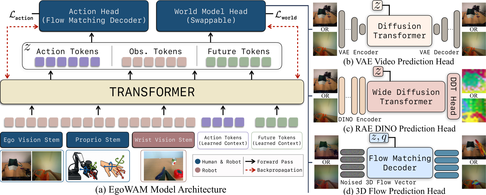
训练时“想象未来”，推理时不做视频 rollout
部署时世界模型头被直接移除，只运行 trunk 和动作头。这更接近多任务学习中的辅助任务：未来预测是训练表征的教师，不是在线规划器。因而实验差异可以归因于训练时学到的表征，而不是推理时某个方法使用了更多计算。
04 · 世界应该表示成什么：Pixel、DINO 与 3D Flow
论文最重要的控制变量是 st+T，也就是世界模型头到底预测什么。作者提出三个标准：
- D1 外观抽象：不应为了逐像素重建，浪费容量记住光照、纹理、人的手和机器人的夹爪长什么样。
- D2 跨具身一致：如果人手与夹爪都让杯子向右移动，它们应该收到相似的监督，而不是因为执行者外观不同被拉到两个表征空间。
- D3 自运动分离：人转头造成的整幅画面移动不应被误认成环境发生了物理变化。
| 目标 | D1 外观抽象 | D2 跨具身一致 | D3 去除头动 | 最直接的归纳偏置 |
|---|---|---|---|---|
| Pixel VAE | 弱 | 弱 | 弱 | 保留可重建的视觉细节 |
| DINO | 强 | 强 | 部分 | 保留物体与场景语义 |
| 3D Flow | 强 | 强 | 强 | 保留物体在三维空间的运动 |
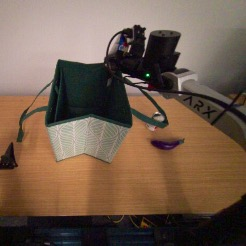
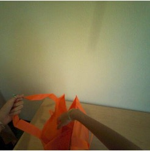
未来帧缩放到 128×128，再由冻结的 Wan VAE 编码成 16×16×16 latent。它保留最多视觉信息，也最容易把外观和头动带入共享 trunk。
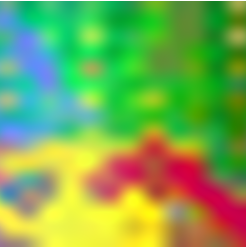
预测 DINOv2-B 的 16×16×768 patch feature。语义空间不必复原每块纹理，但仍按图像网格排列，所以相机转动依然会搬动整张特征图。
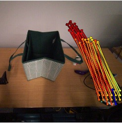
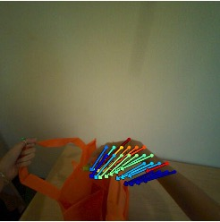
在固定像素锚点上预测三维位移，并用相机位姿把未来点变换回当前相机坐标系。背景趋近零流，真正被操作的物体保留运动。
Pixel：清晰不等于可迁移
Pixel 版本用 6 层、384 hidden、6 heads 的轻量 DiT 从头训练；Pixel-PT 则使用预训练 VACE-1.3B，拥有 30 层、1536 hidden 和 8960 FFN。两者预测相同的 VAE latent，因此可以检验“更强的视频先验能否补救像素目标”。实验给出的答案很克制：它能改善部分任务，但并没有消除像素表征的跨具身问题，有时还会带来先验幻觉。
DINO：把“长得一样”换成“语义上是同一个东西”
DINO 目标丢弃 [CLS] 与 register token，对每个 patch token 做 LayerNorm。预测头沿用 RAE 的 DiTDH：6 层 384 维 backbone 后接 2 层 2048 维宽头。宽头并非装饰，因为每个 DINO token 有 768 个通道；若 denoiser 的宽度长期低于特征维度，语义 latent 上的流匹配很难收敛。
3D Flow：只留下“哪里发生了多少物理位移”
Track4World 从 RGB 序列估计密集三维点轨迹、深度、相机内参和相机位姿。EgoWAM 再结合 Aria VIO 位姿，把所有未来点重新表达在时刻 t 的相机坐标中。人转头时，静止桌面不再产生大范围假运动；杯子被拿起时，它仍具有真实三维位移。
05 · Flow Matching 与相机稳定 3D Flow，具体在学什么
动作头和三种世界模型头都使用一条线性 flow path。训练时随机取一个时间 τ，把高斯噪声与真实目标按比例混合；网络学习沿这条路径把噪声推向数据。它和扩散模型相似，但目标可以直接写成从噪声到数据的速度场。
动作头的时间 τ 从 Beta(1.5, 1.0) 采样，使训练更偏向靠近数据端的区域。动作解码器是 6 层 CrossTransformer，交替使用 self-attention 处理动作块内部关系，再用 cross-attention 读取 trunk 条件；最终以 50 个 v-prediction 步生成长度为 100 的动作块。
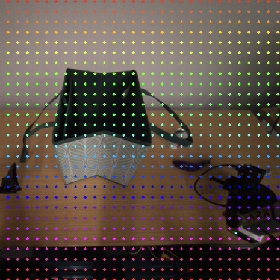
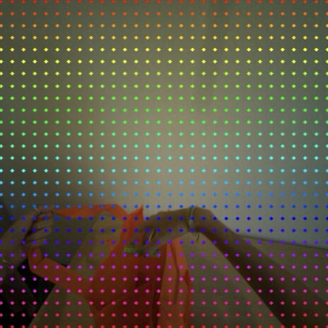
最终 3D Flow target 的形状是 100 × 1120 × 3：100 个时间点、1120 个空间锚点、每点三维位移，不做子采样。为减少跟踪噪声，机器人位移小于 2 mm 的锚点会被过滤；人类视频阈值放宽到 10 mm，并跳过每段视频首尾各 20 帧。
为什么 3D Flow 在空间操作上占优
像素与 DINO 都在问“未来画面是什么样”；3D Flow 直接问“哪些三维点移动了多少”。对杯子是否准确落在碟子中心、夹爪是否覆盖整个工作空间，这种目标和控制所需的几何量更接近。
06 · 训练与推理细节：世界头很重，但部署时不留下
- 共享 trunk
- 256 dim · 16 blocks · 8 heads
- 查询 token
- 64 action + 16 future
- 观察历史
- 单帧
- 动作块
- 100 × 14D
- 动作窗口
- Robot 1.5 s · Human 1.0 s
- 采样步数
- Action / World 均为 50 steps
- 每步 batch
- 32 robot + 32 human
- 优化器
- AdamW · lr 1e−4 · wd 1e−4
- 训练精度
- bf16
- 部署设备
- RTX 4090 · 30 Hz
除 Pixel-PT 外，各版本在单张 NVIDIA L40S 上训练 2000 个“100-step epoch”，即 20 万个更新步；Pixel-PT 因 1.3B 预测头显存更高，使用 2 张 L40S 数据并行训练 1000×100 步。每个任务、每种方法约需两天。这里的 epoch 更像固定长度训练单元，不应按“完整遍历一次数据集”理解。
虽然 EgoVerse 的数据总量约为机器人数据的 10 倍，但每个优化步仍固定取 32 个人类样本与 32 个机器人样本。大数据带来的优势主要是人类 batch 重复更少、场景和物体覆盖更广，而不是人类梯度在数量上压倒机器人梯度。
它不是常见的 action-conditioned simulator
论文公式把动作与未来状态写成给定 z 后的并行输出，世界头并不接收某条候选动作再模拟后果。因此 EgoWAM 的主要贡献是训练期 representation shaping，而不是在测试时用世界模型搜索动作。
07 · 实验设计：三个任务、三种数据规模、两类 OOD
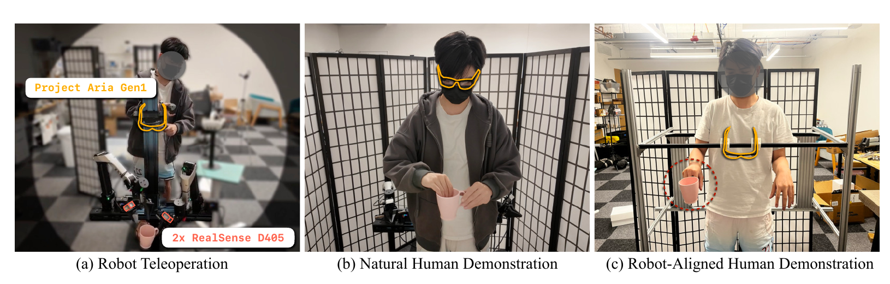
| 任务 | 机器人数据 | 同域人类 | EgoVerse | 成功条件 |
|---|---|---|---|---|
| Cup-on-Saucer | 300 demos / 2.5 h | 2 h | 20.5 h | 转正杯子、双臂交接、竖直放到碟子上，三步全部完成 |
| Fold-Clothes | 360 demos / 3.0 h | 2 h | 21 h | T 恤连续三折，每一步都干净完成 |
| Bag-Grocery | 300 demos / 2.5 h | 2 h | 7 h | 打开袋子并按从左到右顺序放入三件物品 |
每个方法都做 20 次 ID rollout 和 20 次 OOD rollout。OOD 又分成两半：10 次使用训练场景里的新物体，10 次使用新背景、不同桌高等新场景。除了二值成功率，论文还按完成的子任务数量计算 normalized score，避免长任务在最后一步失败时丢掉全部信息。
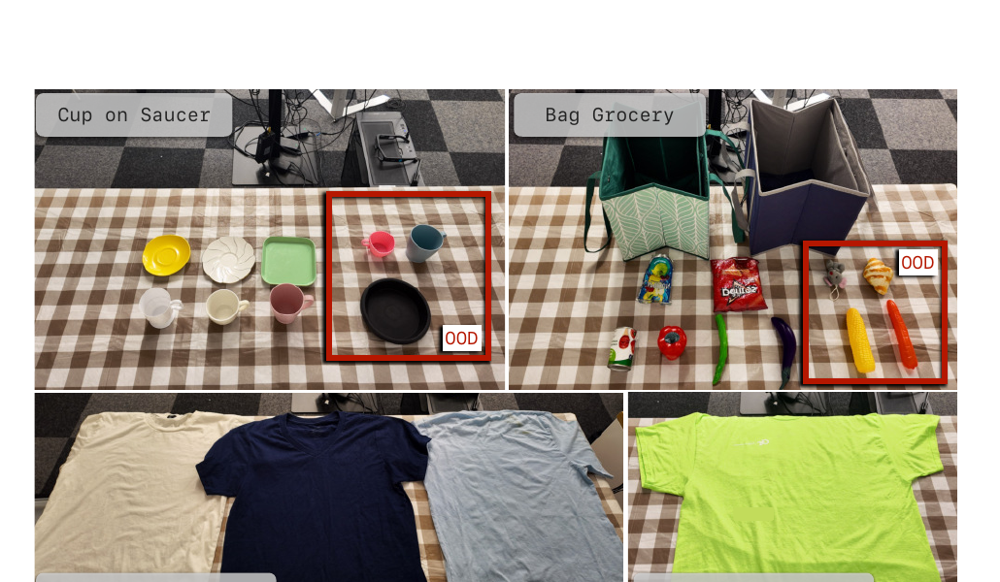
08 · 主结果：DINO 赢泛化，3D Flow 赢空间精度
Figure 3 把每个方法的 Robot Only、加入同域人类数据、加入 EgoVerse 三组结果放在一起。柱顶数字是相对 Robot Only 的绝对百分点变化，不是相对百分比。最稳定的模式有三条：
- BC 在杯碟和折衣上会被自然人类数据拖累；购物装袋因为人和机器人的 pick-and-place 方式更接近，BC 才获得小幅收益。
- DINO 在陌生物体与陌生场景上最强，尤其折衣 OOD 成功率从 15% 提升到 85%，增加 70 个百分点。
- 3D Flow 在杯碟的 ID 空间精度上最强，EgoVerse 后成功率达到 90%；在购物装袋 OOD 上达到 55%，也高于 DINO 的 50%。
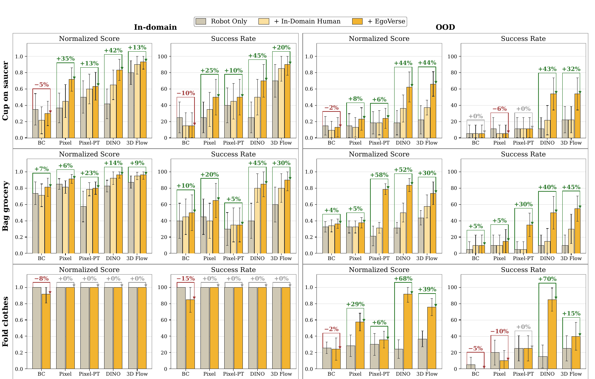
真实机器人成功率
| 方法 | Robot Only | + EgoVerse | 变化 | 最终成功率 |
|---|
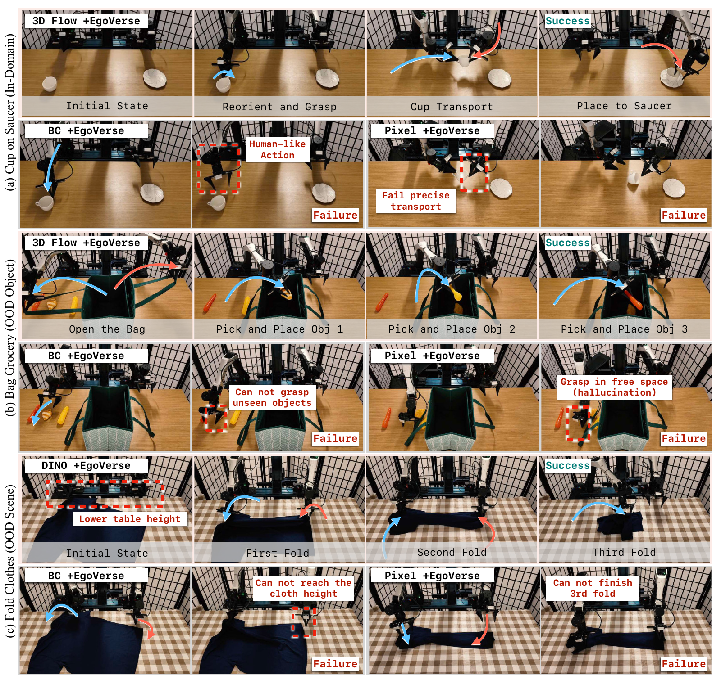
两种抽象不是谁完全取代谁
DINO 的语义先验适合认出“这是没见过的杯子或衣服”；3D Flow 的几何先验适合判断“它向哪里移动、是否到达正确位置”。论文结果更像一张能力分工图，而不是单一赢家榜单。
09 · 消融与因果证据：收益究竟来自哪条监督
9.1 表征空间：WAM 让人和机器人按任务关系靠近
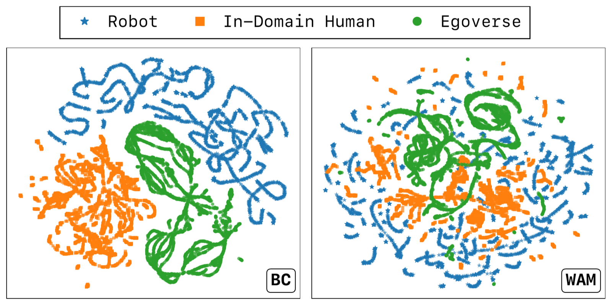
9.2 世界预测误差：3D Flow 从人类数据中得到最多
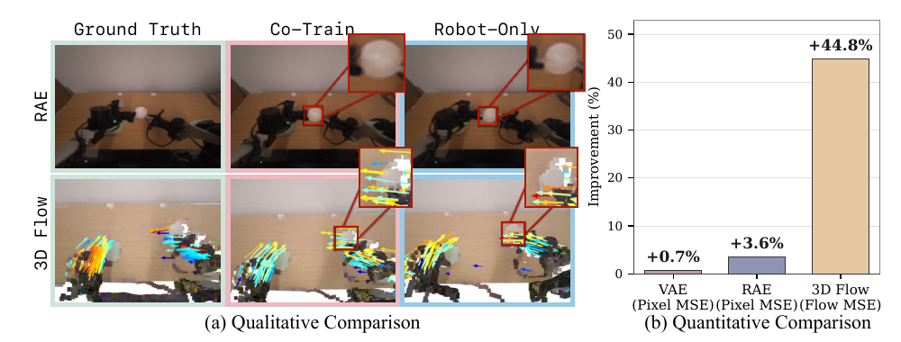
9.3 故意错位的人类动作：BC 跌破 robot-only，3D Flow 基本不动
在 Bag-Grocery 上，作者专门收集一组人类以机器人平行夹爪无法复现的方式抓取物体。自然同域数据下，BC 成功率 45%，3D Flow 为 80%；换成故意错位数据后，BC 降至 20%，低于 40% 的 robot-only 基线，而 3D Flow 仅从 80% 降到 75%。
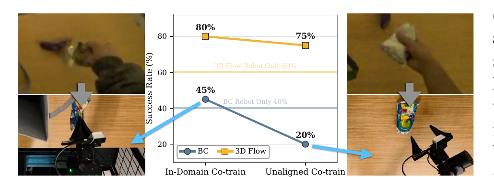
9.4 反过来手工对齐：Pixel 与 DINO 追回收益，3D Flow 保持 85%
在 Cup-on-Saucer 上让人刻意模仿机器人的相机高度、静态视角和抓握策略后，BC 从 15% 升到 35%，Pixel 从 35% 升到 65%，DINO 从 50% 升到 70%。3D Flow 在自然与对齐两种数据下都保持 85%。这组实验把 D3 的作用单独暴露出来：对 Pixel 和 DINO，减少头动等于在采集端替它们做了一部分稳定化；3D Flow 已在表示层完成这件事。
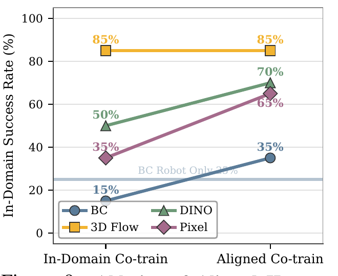
9.5 只给动作、只给 3D Flow、两者都给
作者进一步在 Cup-on-Saucer 上关闭人类 batch 的部分监督。只给 3D Flow 已经在 ID、OOD Object、OOD Scene 三个划分上全面超过只给动作；两种信号同时使用又显著超过 3D Flow-only。OOD Scene 的成功率依次是 0%、10%、30%，说明世界监督是跨场景迁移的主通道，但动作标签仍能提示哪些运动与任务意图相关。
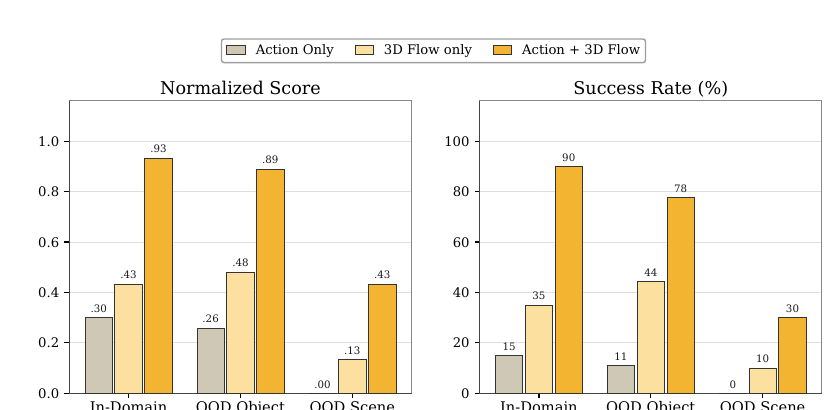
10 · 一个预训练陷阱，以及 RoboTwin 跨机器人复验
10.1 Pixel-PT 为什么会“看得更清楚，却做得更差”
Bag-Grocery 的第一步是打开袋子。Robot-only Pixel-PT 借用了大规模自然视频先验，而自然图片里的购物袋通常已经敞开。模型于是生成一个清晰但错误的未来：袋子在夹爪真正拉开之前就已经打开。动作策略据此跳过开袋阶段，直接进入放物体步骤。
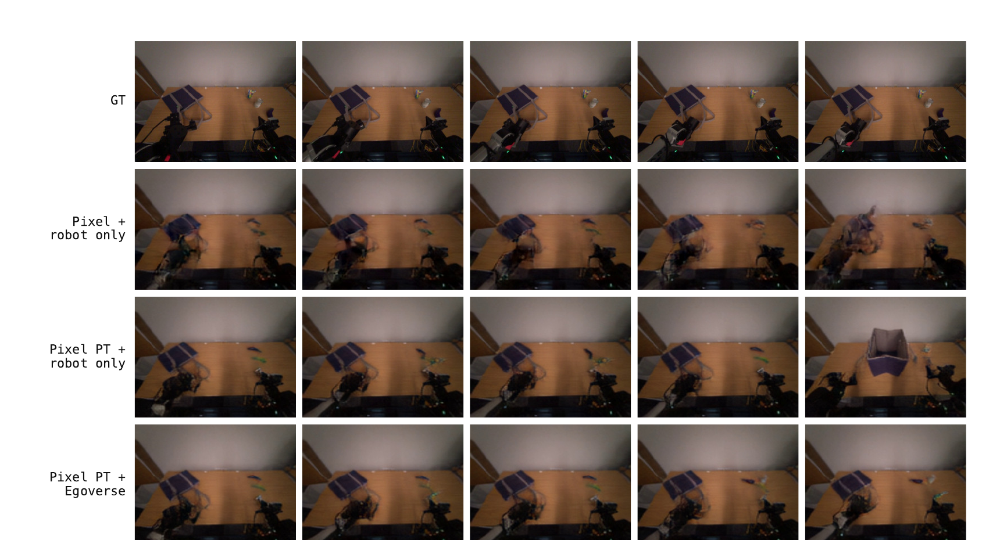
这个案例把“生成质量”和“控制价值”区分得很清楚。视频先验会补全最常见的视觉结果，却未必尊重当前状态和动作因果。人类任务数据的价值之一，是把这种无条件常识重新约束到具体操作序列上。
10.2 RoboTwin：把人机差异换成四种机器人之间的差异
补充实验以 Aloha-AgileX 为主具身，并加入 ARX-X5、Franka、UR5 联合训练。不同机械臂关节数不同，但都转换到相机坐标下的双臂 14D 末端动作。每个任务使用 100 个相同 held-out seed，比较单具身训练 s 与四机器人联合训练 c。
| 任务 | ACT-EE | DP-EE | BC s / c | Pixel s / c | DINO s / c | 3D Flow s / c |
|---|---|---|---|---|---|---|
| pick-diverse-bottles | 2% | 5% | 2 / 6 | 7 / 11 | 4 / 28 | 0 / 16 |
| stack-bowls-three | 0% | 0% | 0 / 0 | 0 / 0 | 0 / 8 | 0 / 16 |
| hanging-mug | 0% | 0% | 0 / 0 | 0 / 1 | 0 / 0 | 0 / 0 |
前两项再次出现同一规律：跨具身训练优于单具身，DINO 和 3D Flow 对外观变化更稳。但绝对成功率也暴露了边界：hanging-mug 需要毫米级穿孔，几乎所有方法为零。外观抽象和几何表征能帮助泛化，却不会自动提供精密控制。
11 · 客观评价：论文解决了什么，还没有解决什么
最强的地方
- 问题拆得干净。固定 trunk、动作头和数据混合，只替换世界目标，使“世界表征”第一次成为人机 WAM 联合训练中的显式实验轴。
- 负迁移被正反两组干预验证。故意错位让 BC 崩溃，手工对齐又让 BC、Pixel、DINO 恢复；3D Flow 在两端都稳定，证据比单纯报最终分数更有解释力。
- 训练与部署边界清楚。世界头只负责塑造表征，不增加测试时成本，避免把更慢的规划式方法与快速 BC 混在一起比较。
- 定性失败与指标对应。空中抓握、低桌面失败、袋子提前打开等案例都能回到对应表征的归纳偏置，而不是只展示成功视频。
需要保留的疑问
- 并非只改变“表示”。三种目标对应的 head 容量差异很大；3D Flow 预测完整 100 步轨迹，而 Pixel/DINO 主要预测终点未来帧。监督密度和架构也在变化。
- λ=1 不等于梯度公平。不同目标的维度、噪声尺度和损失幅值不同，相同 loss weight 未必给 trunk 相同强度的梯度。
- 每个结果单元样本仍小。20 次 ID、20 次 OOD 让成功率以 5 个百分点跳动。总计 1800 次很可观，但单设置的精细差异仍需谨慎。
- 仍是单任务策略。每个任务单独训练，且增益主要是上下文泛化；论文明确承认尚不能从人类视频获得新的动作原语。
- 3D Flow 依赖强前处理。Track4World、Aria VIO、位移阈值和首尾帧过滤共同提供干净目标，迁移到缺少相机位姿的普通网络视频并不直接。
我认为最值得继续做的五个方向
- DINO + 3D Flow 混合目标：语义负责“是什么”，几何负责“怎么动”，可尝试分层 token、联合解码或按任务动态加权，而不是二选一。
- 真正 action-conditioned 的 world model：让未来预测显式接收候选动作，比较训练期辅助监督与测试期短视规划能否互补。
- 多任务与规模曲线：把三个任务放进同一策略，系统改变人类数据量、场景多样性与 batch 配比，验证 human-data scaling 是否持续。
- 面向精密控制的目标：增加接触状态、末端到目标的相对位姿、局部高分辨率几何，解决 hanging-mug 一类毫米级操作。
- 更弱传感器假设：研究不依赖 Aria VIO 的自监督相机稳定、置信度加权 3D tracking，以及在普通第一视角互联网视频上的鲁棒目标生成。
最后把整篇论文压成一句话
EgoWAM 证明，人类视频对机器人最有价值的部分，不一定是可以直接模仿的动作，而是跨身体、跨视角仍然成立的世界变化。
动作标签回答“这个身体怎样执行”；世界表征回答“无论谁执行，环境发生了什么”。